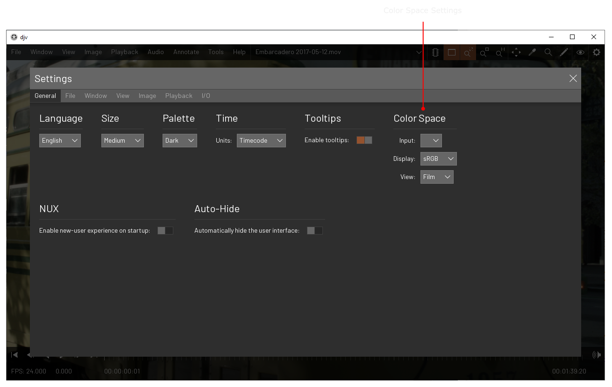
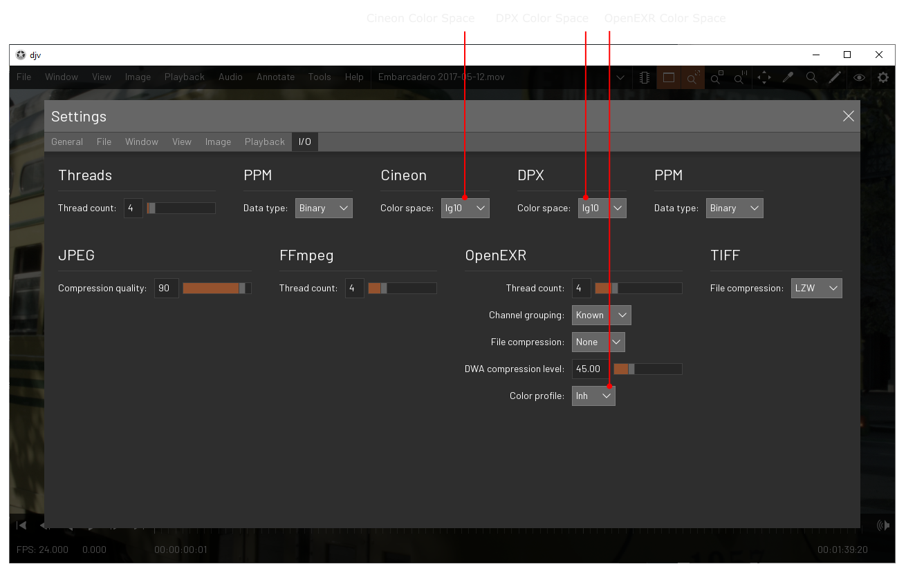
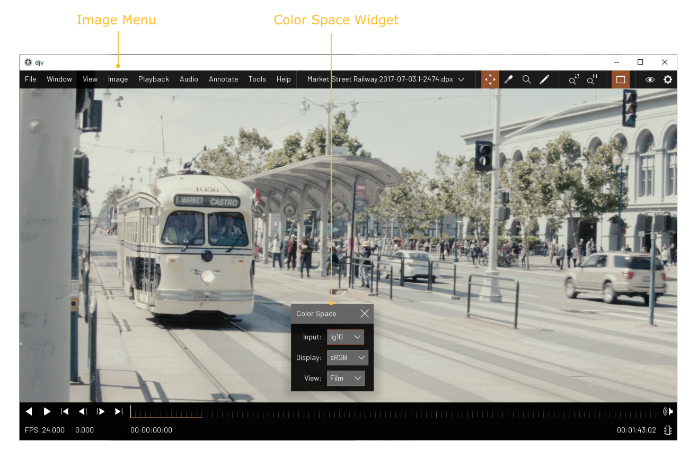

Home | Documentation | Color spaces
OpenColorIO
DJV uses the OpenColorIO library
for color space management. See the OpenColorIO
documentation for how to setup your
configuration.
Color Space Settings
You can set the default color spaces
in the settings dialog. You can set the input color space, the display color space,
and the view color space. These settings will only apply to newly opened files; if you
have existing files already open you can use the menu item "File/Reload" to apply the
new settings.

You can also set the input color space
per file type; if you do this make sure the input color space in the "General" settings
is left blank.

Color Space Widget
You can interactively override the
color space settings per file using the "Color Space Widget", available from the menu
item "Image/Color Space Widget".
